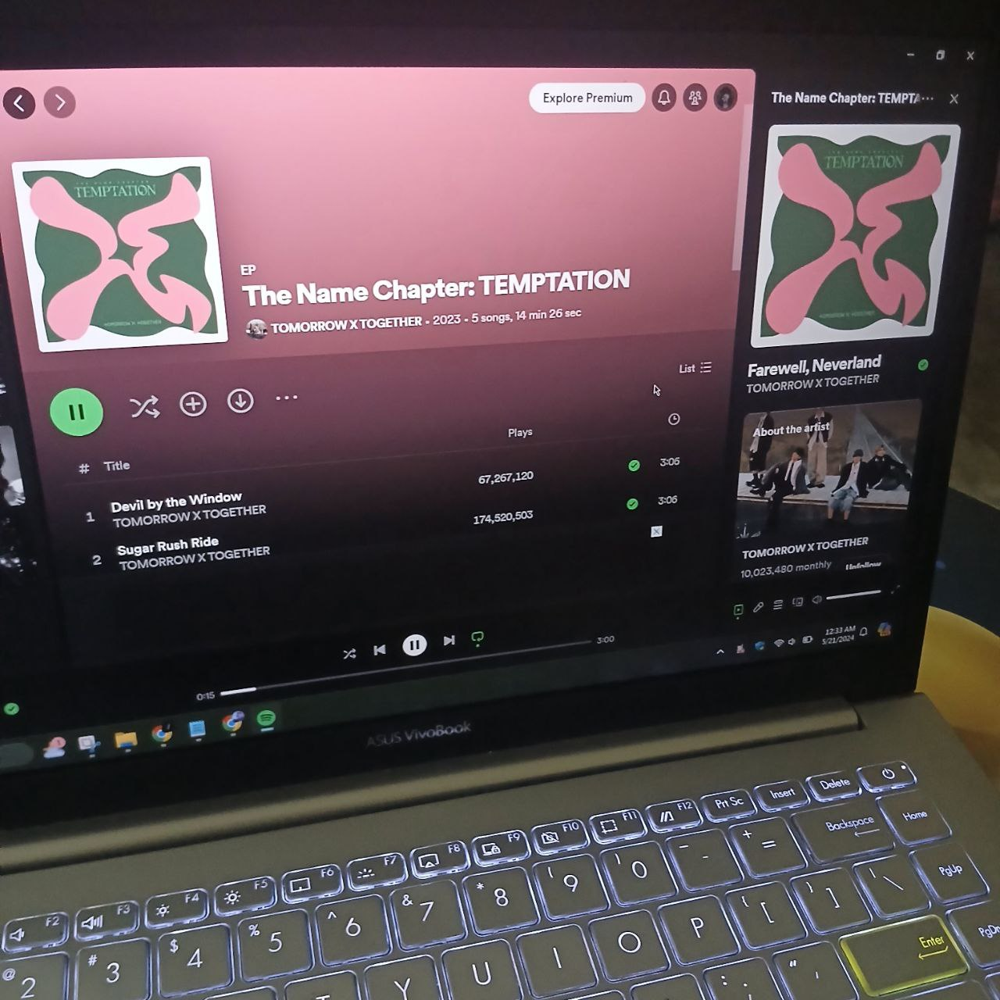
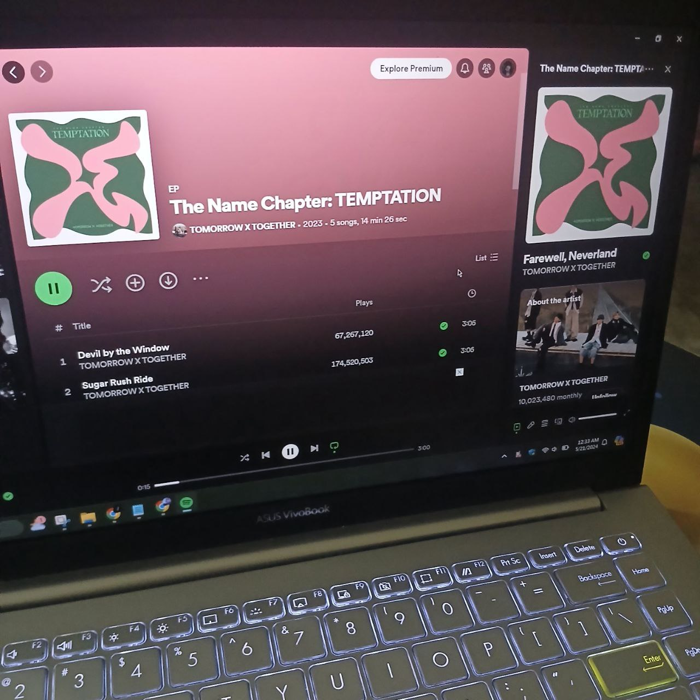
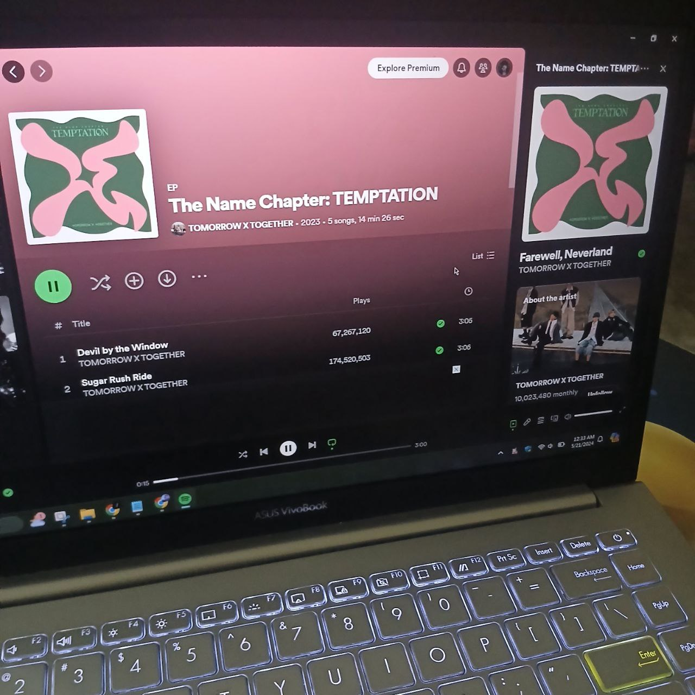

I also love listening to music. Music is like the barrier that kept me away from reality. It can be said that
it is a way for me to escape from reality. The concerns and anxieties with everyday life appear to vanish
when the rhythm takes hold of you. My favourite music genre is K-pop and R&B. My favourite KPOP group
is TOMORROW X TOGETHER or TXT. I started to follow that group in 2019. One of my favourite songs from
them is Farewell Neverland which talks about saying goodbye to your childhood. This song relates to me
since I will turn 20 years old soon. I provided the song in this web. For R&B, my favourite artist is BIXBY
and one of my favourites from him is Easy.
Watching movies and k-dramas is also my favourite thing to do in my free time. One of the recent
k-dramas I have watched is Queen of Tears which instantly became one of my favourites. My emotions
were like a rollercoaster watching this k-dramas. It starred Kim Soohyun and Kim Jiwon. For the movies,
I mostly watched animated movies. My favourite movie is Brave since I relate to the character in the
movie, Princess Merida. For a live-action movie, my favourite is Little Women (2019). The story is pretty
confusing if you did not read the book first. But, what I like about this movie is the cinematography.
